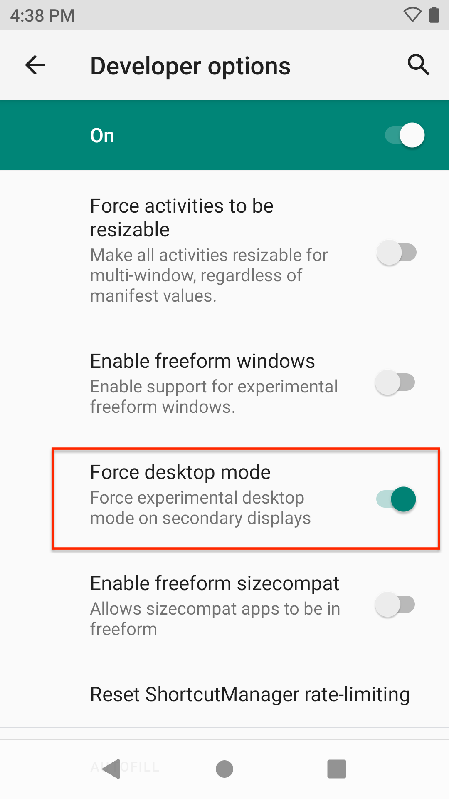

Overview
Zebra Workstation Connect requires a supported Zebra device with the appropriate Zebra OS package docked in a Zebra Workstation Docking Cradle. To experience the full solution, install the Zebra Workstation Connect app v1.0 (or later).
Requirements
- Supported Zebra device(s) running Android 11 (or later)
- The latest Android 11 OS package deployed to supported Zebra device(s)
- The Zebra Workstation Connect app v1.0 (or later), available from:
- TC5X Workstation Docking Cradle Kit (
CRD-TC5X-1SWS-01*)
Kit includes:- Cradle with HDMI, Ethernet and four (4) USB Ports (
CRD-TC5X-1SWS1-01) - Power supply 100-240vac, 12vdc, 4.16a, 50w (
PWR-BGA12V50W0WW) - DC cable (
CBL-DC-388A1-01) - Does NOT include: country-specific AC line cord (sold separately)
* ZWC also supports
CRD-ET5X-1SCOM2RandCRD-ET5X-1SCOM1cradles
- Cradle with HDMI, Ethernet and four (4) USB Ports (
Supported Devices
- TC52ax
Manual Installation
Use this process to set up individual or small groups of devices by copying files directly to device(s). This process requires a device with the latest Zebra Android 11 OS package installed. If necessary, use StageNow to Perform an OS Update on device(s), then return here to proceed.
To install the ZWC solution (prior to docking for the first time):
If installing from the Google Play store:
Visit the Google Play store (link above) and install Zebra Workstation Connect onto target device(s).
THEN SKIP TO STEP 5.If installing from the Zebra Support Portal:
Prepare device for copying files directly from a PC by enabling developer options and USB debugging in the device Settings panel.Download (link above) and push the Zebra Workstation Connect app (
com.zebra.workstationconnect.release) onto target device(s) using adb or a similar means.On the device, navigate to
com.zebra.workstationconnect.releaseand install the app.After the ZWC app is installed, navigate to its icon on the device screen and long-press it.
Alternatively, go to Settings > Apps & notifications > SEE ALL APPS > WorkstationConnect > Advanced > Display over other apps.
A screen appears similar to the one shown below:
Enable the "Display over other apps" option (it might be necessary to scroll down).
When finished, exit that panel but stay in Settings for the next step.In the Developer options panel, enable Desktop Mode:
Settings > System > Advanced > Developer options > (scroll down to) Enable desktop mode  IMPORTANT: Mobile-device apps are often configured with a fixed window size, which can impose limits when organizing multiple apps running on the desktop. Selecting the option to Force activities to be resizable (shown above) can help alleviate this issue, but should be tested thoroughly before deployment to production environments.Reboot the device.
NOTE: A device reboot is ALWAYS required after installing any new primary or secondary launcher.
After rebooting, the device presents Desktop Mode whenever it's docked.
After Installation
When first inserted into a Workstation Docking Cradle that's connected to an external monitor, a device configured as above displays the Zebra Workstation Connect default Desktop similar to the image below. The device screen allows the user to launch and run applications as usual.
Click to enlarge; ESC to exit.
After the device user or an administrator configures app shortcuts and other preferences for a device, those settings are restored whenever that device is placed in a Workstation Docking Cradle.
For help setting up Desktop Mode, see the Workstation Connect User Guide (pdf)
Also see important Usage Notes.
Automated Installation
The Zebra Workstation Connect solution can be installed and configured remotely using Zebra StageNow and through most commercially available Enterprise Mobility Management (EMM) systems.
For StageNow and EMM instructions, see the Workstation Connect Administrator's Guide.
Development Best Practices
When developing apps for use with the Zebra Workstation Connect solution, the following techniques and resources might be useful.
Query External Monitor
To programmatically query the secondary display ID:
DisplayManager dm = (DisplayManager) getSystemService(Context.DISPLAY_SERVICE);
Display[] displays = dm.getDisplays();
for (Display display : displays) {
String name = display.getName();
if (name.startsWith("DisplayLink") || name.startsWith("HDMI Screen")) {
return display.getDisplayId();
}
}
Multi-window Apps
To build an app to be multi-window ready, set the following manifest flag:
<application
android:resizeableActivity="true">
</application>
Learn more about building multi-window apps:
- Multi-window support
- Launch an app on the secondary display
- Preserve app state when moving between displays
Apps that are built as non-resizable exhibit specific behaviors when launching on the Desktop and moving from the device to the Desktop. Learn more.
Refresh Suppression
To suppress app-refresh issues that can arise when moving an app from the device to the Desktop, add the following line to the manifest's <activity> element:
<android:configChanges = “orientation|keyboardHidden|screenSize|smallestScreenSize|screenLayout|density|uiMode”/>
Learn more about the activity element.
Presentation Class
The Presentation class allows an app to show content on a secondary display. When developing or working with apps that will display content on an external monitor, it might be helpful to understand this class and its related Context, Display, and Router classes. Learn more.
Starting Tasks
For apps containing multiple activities, Zebra recommends following Android developer guidance for starting a new task.
Monitor Docking
To monitor the docking status of a device programmatically, refer to this Android guide to determine the docking state and type.
The dock-state details are added as an extra parameter in the sticky broadcast of the ACTION_DOCK_EVENT intent action. As ACTION_DOCK_EVENT is a sticky broadcast, the registerReceiver() method should be called with the instance of the broadcast receiver to get the onReceive call events and use the intent extra to determine whether the device is docked or undocked.
Register the DOCK intent:
IntentFilter dockFilter = new IntentFilter(EXTRA_DOCK_STATE);
dockFilter.addAction(ACTION_DOCK_EVENT);
registerReceiver(new DockReceiver(), dockFilter);
Call the registerReceiver() method:
private final class DockReceiver extends BroadcastReceiver{
@Override
public void onReceive(Context context, Intent intent) {
int dockState = intent.getIntExtra(Intent.EXTRA_DOCK_STATE,Intent.EXTRA_DOCK_STATE_UNDOCKED);
if (dockState == 1) {
// we are now in 'dock'
// place your code here
}else if(dockState == 0){
// we are now in 'undock'
// place your code here
}
}
}
Also See
For more information about ZWC setup, administration, features and usage, please refer to the following guides:
- Workstation Connect Administrator's Guide (pdf) | Setting up users, apps and shortcuts, configuring access to USB storage
- Workstation Connect Installation Guide (pdf) | Installing the ZWC solution manually, or using Zebra StageNow or an EMM system
- Usage Notes | Behaviors and restrictions of the Zebra Workstation Connect solution
- FAQ | Frequently asked questions about ZWC